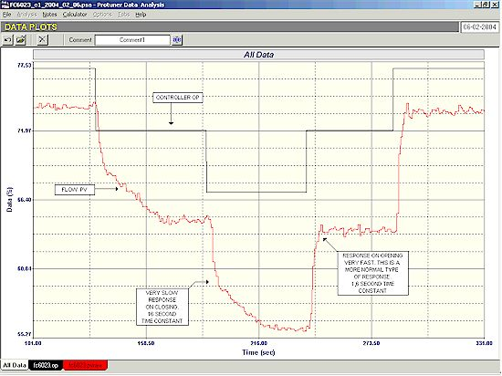
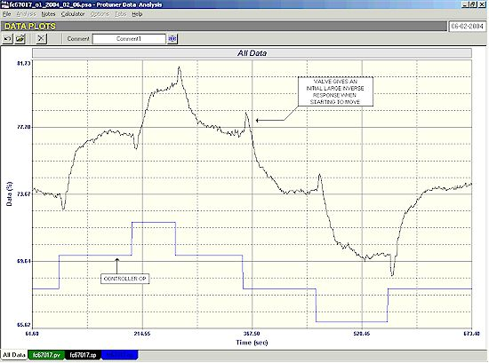
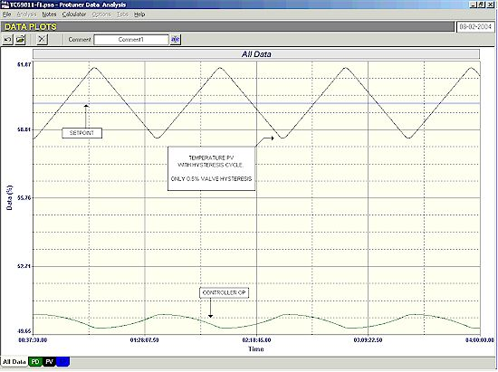

|
| [Home] [About us] [Contact us] [Training] [Optimisation services] [Protuner] |
| [Loop signatures] [Case histories] |
|
Control Loop Case History 80 POOR CONTROL PERFORMANCE IS A WORLD WIDE PHENOMENON As mentioned many times in previous articles, the state of regulatory controls in plants is in fact unbelievably bad. Based on my experience in every one of the several hundred plants where I have performed optimisation, less than 5% of all loops in automatic operate at all effectively. I am frequently asked during my courses in Southern Africa if the state of controls in first world countries is any better. I will answer this later. The problems with controls is firstly largely due to a global complete lack of training on the practical aspects of control loop operation and optimisation, and secondly on the ignorance and lack of awareness on the true state of things by senior management including control managers. They seem to think everything is working well, having accepted the control performance over the years, and have no idea whatsoever of what huge improvements, and additional profits could be achieved if control optimisation was properly instituted as a separate distinct discipline. Most senior control people think of optimisation as "loop tuning", and believe it can be performed by lower level disciplines in the control departments. They generally treat it as of very minor importance, and are not prepared to invest any capital in it and allow very little engineering time to achieve results. Prior to plant courses I always advise the plant that at least one senior manager or engineer from the instrumentation and control department should attend, as well as a senior process manager, as optimisation can only succeed if both departments work as a team, and it can also only succeed with good management support from both of the departments. On very many instances I find on my arrival at the plant, that the delegates are all relatively low level mechanicians, without even a technician amongst them, let alone an engineer, a manager, or a process person. The delegates, although usually as keen as mustard, often have no experience of control loops, have very little experience of working on PLC's and/or DCS's, and many have great difficulty in following the course concepts. They often complain that they will get very little management support in practicing optimisation after the course, and feel the training will be wasted. They generally say they have been sent on a "tuning course". I always correct them and advise that they are on an optimisation course, in which tuning is a relatively tiny part. One control manager recently told me that his senior people already were well versed in optimisation, that they were far too busy to attend such a basic course, and that optimisation had nothing to do with the process people. He also mentioned that at least 95% of the loops in the plant were already operating reasonably well. However every one of the approximately 30 simple loops we looked at during the practical part of the course was in fact not operating at all well. The majority had major problems that no one was aware of, and not a single one had tuning even close to what could be regarded as optimum. During this session we got every one of those loops working many times better than it was before. One very critical temperature control loop in particular was optimised to respond some 600 times faster than it previously did. One can only speculate what additional profits that could have been made over the years, and which are still being lost with the controls operating so poorly. In most cases where management have gone along with my suggestions and included senior control and also process people on the courses, the results have been astounding, and optimisation in those plants is now an established discipline. One very senior control manager with many years field experience in a large petro-chemical refinery, who at first had strongly disagreed with me on the need for senior people to perform optimisation, finally decided to attend the course himself. At the end of the course he went around the plant on his own doing his own little control loop audit. He then emailed me to admit he had been wrong, that from now on all optimisation would be performed by senior experienced personnel, and that all advanced control work would be halted until the "base layer" was properly optimised. Are things different in first world countries? My experience is that the plants there are just as bad as those in Southern Africa. Possibly they have access to better trained personnel, but once again they have no knowledge of the practical side of control loop optimisation. I have included a few examples of problems that nobody was aware of taken from a large chemical plant in Europe where I performed some optimisation work am few months ago. An open loop test performed on a very critical flow loop is shown in Figure 1. It was essential that this loop work as fast as possible. The process people complained that the variance on this control was high and the plant was loosing a lot of money because of it.  Figure 1 The test shows that the valve response was very bad. The valve took over 30 seconds to respond to 5% steps in the closing direction, but only 4 seconds in the opening direction, which is more normal. There is obviously something very wrong with this valve. There is no way that one can get good fast control until this valve is sorted out. Figure 2 shows an open loop test on another flow loop. The valve here displays an interesting problem. It shows an inverse response each time the valve moves. Once it does start moving in the right direction, it travels extremely slowly and takes about a minute to get to the new position. That is incredibly slow for a pneumatically operated valve. Once again good control is impossible with such a final control element. However if the valve had moved faster it is possible, and highly probable, that automatic control with it would have been impossible, as the inverse response may have resulted in a continuous cycle on a fast process like flow.  Figure 2 It is interesting to note that both of these valves were equipped with smart positioners. (See previous Case History article on valves equipped with smart positioners). The next example is of a temperature control loop which was cycling continually. The process people were despairing of this loop, which was very important. The product quality was also being badly affected by the poor control performance. The open loops test shown in Figure 3 is a very interesting one.
Figure 3 The process dynamics fall into the integrating (or ramping) class of processes. Some of the more unusual features in the dynamics of this process are:
The combination of these two factors make the process extremely difficult to control. It is one where it is almost impossible to try and control in manual. Ideally the temperature sensor should be moved much closer to the heating source to try and reduce the deadtime as much as possible. Feedback control can just work to control this process provided that all the equipment is perfect. It will be remembered from the articles on valve hysteresis in the Loop Signature series of articles, that any valve hysteresis on an integrating process will result in a continuous cycle with PI control in automatic. Normally the relatively small hysteresis (< 1%) found on most valves does not cause a significantly noticeable cycle. However in this case with the long deadtime and large process gain, even the slightest hysteresis will cause really bad cycling. Figure 4 illustrates how the loop with relatively good tuning went into a 4% amplitude cycle with only a small 0 .5% hysteresis on the valve. This would be an ideal case to use a secondary flow control cascaded to the temperature to eliminate the hysteresis as seen by the temperature controller.  Figure 4 These are only a few of the many problems that were encountered in the course in this plant, and were typical of things I have seen in Southern African plants, and also in all plants I have worked on in other countries as well. One thing that was slightly different was that the particular country where this plant is situated is very socialistic and has very strong labour unions. In this case the people who were responsible for fixing the valves, and the people who dealt with the DCS were in different departments falling under separate unions. Nobody from the valve department had been included on the course, and when we encountered the problems that were occurring on the valves, there was no way in which the DCS people could get the valve people to do anything about the problems. The latter merely came back and said they had checked the valves and were quite happy that they were set-up properly, and did not have any problems. I find it hard enough having to try and sort out control problems. When it comes to union and interdepartmental problems, I can only throw up my hands. Again I come back to the vital point that optimisation is a multi-disciplinary function, and can only be performed with teams working together from all relevant departments, including the process people. Michael
Brown is a specialist in control loop optimisation, with many years of
experience in process control instrumentation. His main activities are
consulting, and teaching practical control loop analysis and
optimisation. He gives training courses which can be held in clients'
plants, where students can have the added benefit of practising on live
loops. His work takes him to plants all over South Africa, and also to
other countries. He can be contacted at: |